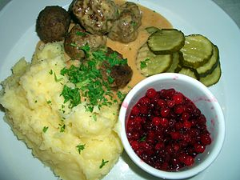

Sweeden
Food

Swedish cuisine is the traditional food of the people of Sweden. Due to Sweden's large North–South expanse, there are regional differences between the cuisine of North and South Sweden.[1]
Historically, in the far North, meats such as reindeer, and other (semi-) game dishes were eaten, some of which have their roots in the Sami culture, while fresh vegetables have played a larger role in the South. Many traditional dishes employ simple, contrasting flavours, such as the traditional dish of meatballs and brown cream sauce with tart, pungent lingonberry jam (slightly similar in taste to cranberry sauce).
Swedes have traditionally been very open to foreign influences, ranging from French cuisine during the 17th and 18th centuries, to the sushi and caffé latte of today.